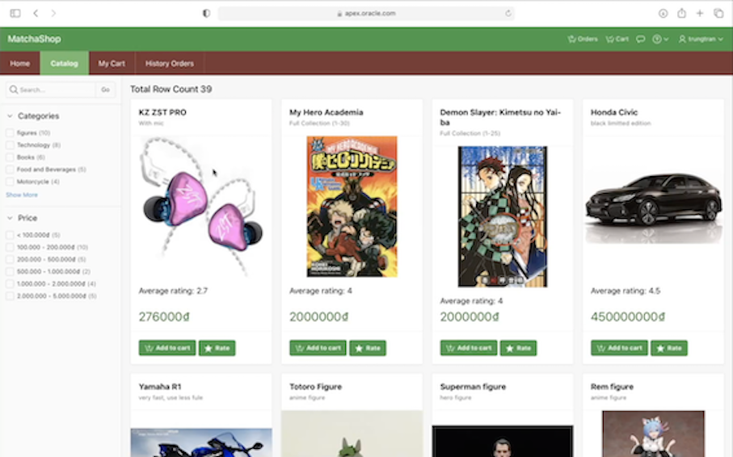

In institute
1. Online shopping application in Practical Database Concept course _ 2021
I was experienced the process of creating an online shopping application with the role of a technical leader in a team of 4 people. In this project, I applied knowledge of database, some css programming language for formating the page and used Oracle Apex tool to buil the application.
2. A cooking recipe suggestion application _ 2021
This project applies the usage Python and SQL for backend, Django framework for the web development, HTML CSS and JS for the frontend and MySQL as a database management tool.
3. A website in Web Progamming course _ 2022
This project applies the usage of HTML, JS and PHP programming language.